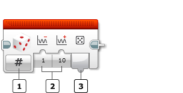

					<table cellpadding="0" cellspacing="0" border="0"><tbody><tr><td>
	
						<h1>随机模块<a name="top"></a></h1>
		<div id="block_1205" class="block blockHeader">
				<table cellspacing="0" cellpadding="0" border="0">
			<tbody><tr>
				<td valign="top" class="image"></td>
				<td valign="top" class="description"><div class="text-wrapper">随机模块可以输出随机数字或逻辑值。可以使用随机模块的结果使机器人从不同动作中随机进行选择。</div></td>
			</tr>
		</tbody></table>
			</div>
	<div id="block_1206" class="block blockChaptor">
		<div class="title"><a name="ChooseTheOutputType" style="position:relative; top:-10px;"></a>选择输出类型</div>
		<div class="description"></div>
	</div>
	<div id="block_1207" class="block blockTable bullets">
		<table class="blockTable">
		
<tbody><tr><td></td><td>模式选择器 </td></tr><tr><td></td><td>输入 </td></tr><tr><td></td><td>输出 </td></tr>		</tbody></table>
	</div>
	<div id="block_1208" class="block blockStep">
		<div class="title"></div>
		<div class="description">使用模式选择器可选择是输出随机数字值还是随机逻辑值。选择模式之后，可以选择<a href="./index.html?id=Random#InputsAndOutputs">输入</a>。输入控制<a href="./index.html?id=Random#Number">值</a>输出的范围和概率。</div>
			<div class="links">模式：<a href="./index.html?id=Random#Mode_Numeric">数字</a>、<a href="./index.html?id=Random#Mode_Boolean">逻辑</a></div>
	</div>
	<div id="block_1210" class="block blockChaptor">
		<div class="title"><a name="Modes" style="position:relative; top:-10px;"></a>模式</div>
		<div class="description"></div>
	</div>
	<div id="block_1211" class="block blockMode">
		<div class="title"><a name="Mode_Numeric" style="position:relative; top:-10px;"></a>数字</div>
		<div class="description"><br>
<br>
“数字”模式输出随机整数值。<a href="./index.html?id=Random#Number">值</a>会设置为处于<a href="./index.html?id=Random#Lower">下限</a>和<a href="./index.html?id=Random#Upper">上限</a>指定的范围内的随机整数。此范围内的每个整数值的选择概率是相等的。</div>
	</div>
	<div id="block_1212" class="block blockExample">
		<div class="title">示例</div>
		<div class="image"></div>
		<div class="description">此程序在 500 至 5000 Hz 的范围内生成一系列连续的随机频率。</div>
	</div>
	<div id="block_1213" class="block blockMode">
		<div class="title"><a name="Mode_Boolean" style="position:relative; top:-10px;"></a>逻辑</div>
		<div class="description"><br>
<br>
“逻辑”模式输出“真”或“伪”值。输出“真”值的概率由<a href="./index.html?id=Random#PercentTrue">为“真”的概率</a>输入指定。此输入是 0 至 100 之间的百分比值。例如，25 的概率会使得有 25% 的机率输出“真”，有 75% 的机率输出“伪”。</div>
	</div>
	<div id="block_1214" class="block blockExample">
		<div class="title">示例</div>
		<div class="image"></div>
		<div class="description">此程序使机器人随机选择向左转和向右转（各自的机率为 50/50）。</div>
	</div>
	<div id="block_1215" class="block blockTip">
		<div class="title">提示和技巧</div>
		<div class="boxContent">
			<div class="description">要使机器人从两个以上的动作中随机进行选择，可以使用具有<a href="./index.html?id=Random#Mode_Numeric">数字</a>模式的随机模块和“数字”模式的<a href="./index.html?id=CaseSelector">切换模块</a>。例如，可以输出 1 至 5 之间的随机数字，并使用此值从切换中的五种不同情况中进行选择。</div>
				</div>
	</div>
	<div id="block_1217" class="block blockChaptor">
		<div class="title"><a name="InputsAndOutputs" style="position:relative; top:-10px;"></a>输入与输出 <a name="Parameters" style="position:relative; top:-10px;"></a></div>
		<div class="description">随机模块的输入控制输出值的范围和概率。可以将输入值直接输入到模块中。或者，可以通过数据线从其他编程模块的输出提供值。</div>
	</div>
	<div id="block_1218" class="block blockTable ">
		<table class="blockTable">
		

			<tbody><tr>
<th>输入</th><th>类型</th><th>允许的值</th><th>备注</th>			</tr>
<tr><td>下限 <a name="Lower" style="position:relative; top:-10px;"></a></td><td>数字</td><td>任何数字</td><td>“数字”输出的下限</td></tr><tr><td>上限 <a name="Upper" style="position:relative; top:-10px;"></a></td><td>数字</td><td>任何数字</td><td>“数字”输出的上限</td></tr><tr><td>为“真”的概率 <a name="PercentTrue" style="position:relative; top:-10px;"></a></td><td>数字</td><td>0 至 100</td><td>“逻辑”输出的“真”结果的百分比概率</td></tr>		</tbody></table>
	</div>
	<div id="block_1219" class="block blockStep">
		<div class="title"></div>
		<div class="description">随机模块的输出提供随机值。要使用该输出，请使用<a href="./index.html?id=DataWires">数据线</a>将其连接到另一个编程模块。</div>
	</div>
	<div id="block_1220" class="block blockTable ">
		<table class="blockTable">
		

			<tbody><tr>
<th>输出</th><th>类型</th><th>备注</th>			</tr>
<tr><td>值  <a name="Number" style="position:relative; top:-10px;"></a>  <a name="Result" style="position:relative; top:-10px;"></a></td><td>数字或逻辑</td><td>“数字”模式中的数字<br>
“逻辑”模式中的逻辑</td></tr>		</tbody></table>
	</div>
	
			<div id="quick">
				<div class="header"><a href="./index.html?id=Random#header">随机</a></div>
					<div class="quickText">快速链接</div>
					
					<ul>
	<li><a href="./index.html?id=Random#ChooseTheOutputType">选择输出类型</a></li><li><a href="./index.html?id=Random#Modes">模式</a></li><li><a href="./index.html?id=Random#InputsAndOutputs">输入与输出</a></li>					</ul>
			</div>
	
	</td></tr></tbody></table>